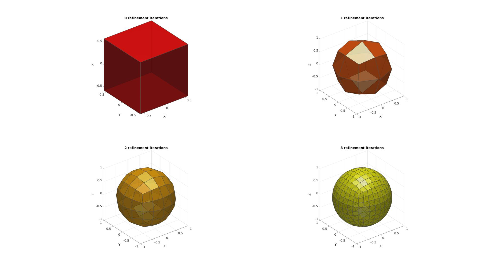
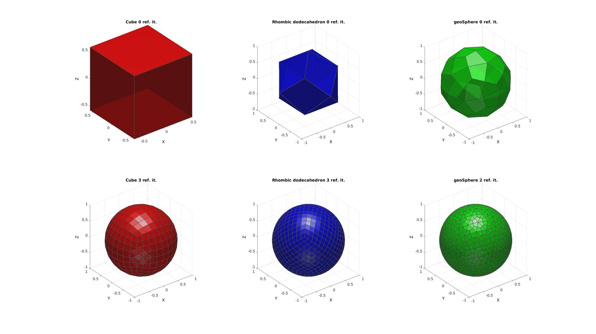

quadSphere
Below is a demonstration of the features of the quadSphere function
Contents
clear; close all; clc;
Plot settings
fontSize=15; faceAlpha=0.75; edgeColor=0.3*ones(1,3); edgeWidth=1.5;
Building a quadrangulated sphere
The function inputs are n and r which define the mesh refinement and radius respectively. The mesh refinement number n defines the number of subquadrangulation (see function subQuad) iterations performed on an initial solid. The function outputs the faces (F) and vertices (V). The default initial solid is the cube. However this can be altered by varying the optional 3rd input oriOpt. Its value sets the initial solid as: oriOpt=1 -> Tetrahedron oriOpt=2 -> Cube oriOpt=3 -> Octahedron oriOpt=4 -> Icosahedron oriOpt=5 -> Rhombic dodecahedron oriOpt=6 -> (Buckminster-Fuller) geoSphere For option 6, geoSphere the subdevisions are based on subtriangulations of the icosahedron (see geoSphere) after which all faces are converted to quadrilateral faces (see tri2quad). Below is a visualisation for n=0:1:3 for the cube as initial solid.
% Open figure for plotting hf=cFigure; %Defining geodesic dome r=1; %sphere radius n=0:1:3; %Refinements pColors=autumn(numel(n)); for q=1:1:numel(n); [F,V]=quadSphere(n(q),r,2); subplot(2,2,q); hold on; title([num2str(n(q)),' refinement iterations'],'FontSize',fontSize); xlabel('X','FontSize',fontSize); ylabel('Y','FontSize',fontSize); zlabel('Z','FontSize',fontSize); hp=patch('Faces',F,'Vertices',V); set(hp,'FaceColor',pColors(q,:),'FaceAlpha',faceAlpha,'lineWidth',edgeWidth,'edgeColor',edgeColor); camlight headlight; set(gca,'FontSize',fontSize); view(3); axis tight; axis equal; grid on; end
Demo showing initial shapes and subquadrangulated results
hf=cFigure; [F,V]=quadSphere(0,r,2); subplot(2,3,1); hold on; title(['Cube 0 ref. it.'],'FontSize',fontSize); xlabel('X','FontSize',fontSize); ylabel('Y','FontSize',fontSize); zlabel('Z','FontSize',fontSize); hp=patch('Faces',F,'Vertices',V); set(hp,'FaceColor','r','FaceAlpha',faceAlpha,'lineWidth',edgeWidth,'edgeColor',edgeColor); camlight headlight; set(gca,'FontSize',fontSize); view(3); axis tight; axis equal; grid on; [F,V]=quadSphere(3,r,2); subplot(2,3,4); hold on; title(['Cube 3 ref. it.'],'FontSize',fontSize); xlabel('X','FontSize',fontSize); ylabel('Y','FontSize',fontSize); zlabel('Z','FontSize',fontSize); hp=patch('Faces',F,'Vertices',V); set(hp,'FaceColor','r','FaceAlpha',faceAlpha,'lineWidth',edgeWidth,'edgeColor',edgeColor); camlight headlight; set(gca,'FontSize',fontSize); view(3); axis tight; axis equal; grid on; [F,V]=quadSphere(0,r,5); subplot(2,3,2); hold on; title(['Rhombic dodecahedron 0 ref. it.'],'FontSize',fontSize); xlabel('X','FontSize',fontSize); ylabel('Y','FontSize',fontSize); zlabel('Z','FontSize',fontSize); hp=patch('Faces',F,'Vertices',V); set(hp,'FaceColor','b','FaceAlpha',faceAlpha,'lineWidth',edgeWidth,'edgeColor',edgeColor); camlight headlight; set(gca,'FontSize',fontSize); view(3); axis tight; axis equal; grid on; [F,V]=quadSphere(3,r,5); subplot(2,3,5); hold on; title(['Rhombic dodecahedron 3 ref. it.'],'FontSize',fontSize); xlabel('X','FontSize',fontSize); ylabel('Y','FontSize',fontSize); zlabel('Z','FontSize',fontSize); hp=patch('Faces',F,'Vertices',V); set(hp,'FaceColor','b','FaceAlpha',faceAlpha,'lineWidth',edgeWidth,'edgeColor',edgeColor); camlight headlight; set(gca,'FontSize',fontSize); view(3); axis tight; axis equal; grid on; [F,V]=quadSphere(0,r,6); subplot(2,3,3); hold on; title(['geoSphere 0 ref. it.'],'FontSize',fontSize); xlabel('X','FontSize',fontSize); ylabel('Y','FontSize',fontSize); zlabel('Z','FontSize',fontSize); hp=patch('Faces',F,'Vertices',V); set(hp,'FaceColor','g','FaceAlpha',faceAlpha,'lineWidth',edgeWidth,'edgeColor',edgeColor); camlight headlight; set(gca,'FontSize',fontSize); view(3); axis tight; axis equal; grid on; [F,V]=quadSphere(2,r,6); subplot(2,3,6); hold on; title(['geoSphere 2 ref. it.'],'FontSize',fontSize); xlabel('X','FontSize',fontSize); ylabel('Y','FontSize',fontSize); zlabel('Z','FontSize',fontSize); hp=patch('Faces',F,'Vertices',V); set(hp,'FaceColor','g','FaceAlpha',faceAlpha,'lineWidth',edgeWidth,'edgeColor',edgeColor); camlight headlight; set(gca,'FontSize',fontSize); view(3); axis tight; axis equal; grid on;

GIBBON www.gibboncode.org
Kevin Mattheus Moerman, gibbon.toolbox@gmail.com
GIBBON footer text
License: https://github.com/gibbonCode/GIBBON/blob/master/LICENSE
GIBBON: The Geometry and Image-based Bioengineering add-On. A toolbox for image segmentation, image-based modeling, meshing, and finite element analysis.
Copyright (C) 2019 Kevin Mattheus Moerman
This program is free software: you can redistribute it and/or modify it under the terms of the GNU General Public License as published by the Free Software Foundation, either version 3 of the License, or (at your option) any later version.
This program is distributed in the hope that it will be useful, but WITHOUT ANY WARRANTY; without even the implied warranty of MERCHANTABILITY or FITNESS FOR A PARTICULAR PURPOSE. See the GNU General Public License for more details.
You should have received a copy of the GNU General Public License along with this program. If not, see http://www.gnu.org/licenses/.